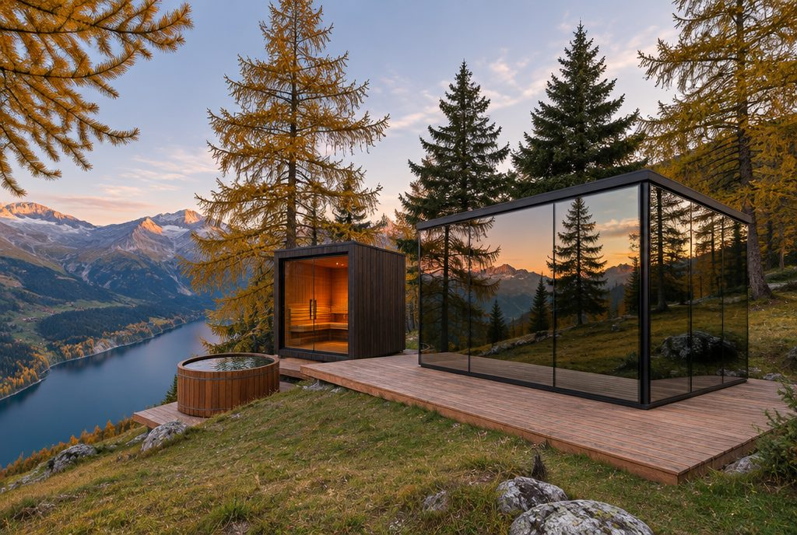
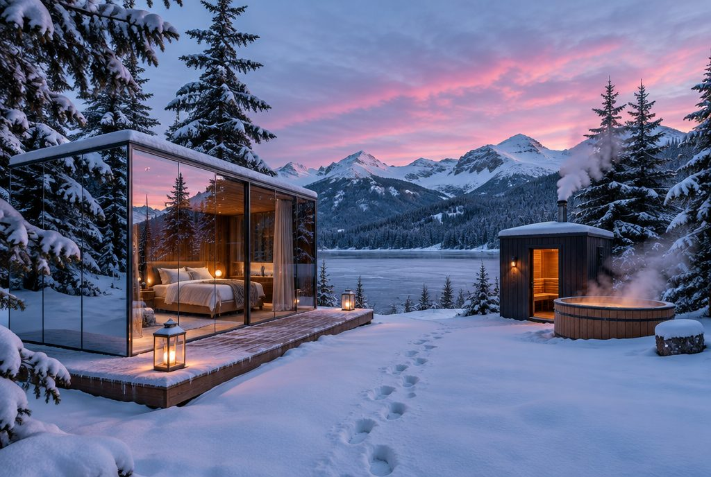
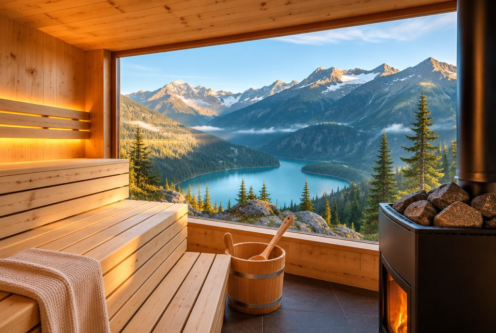
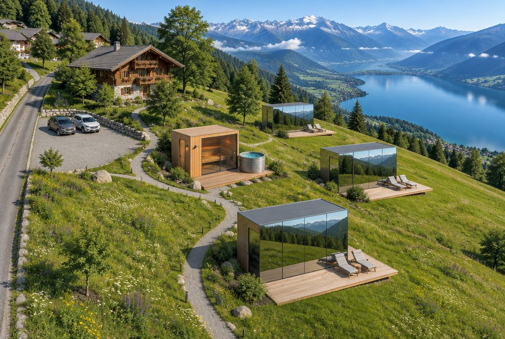
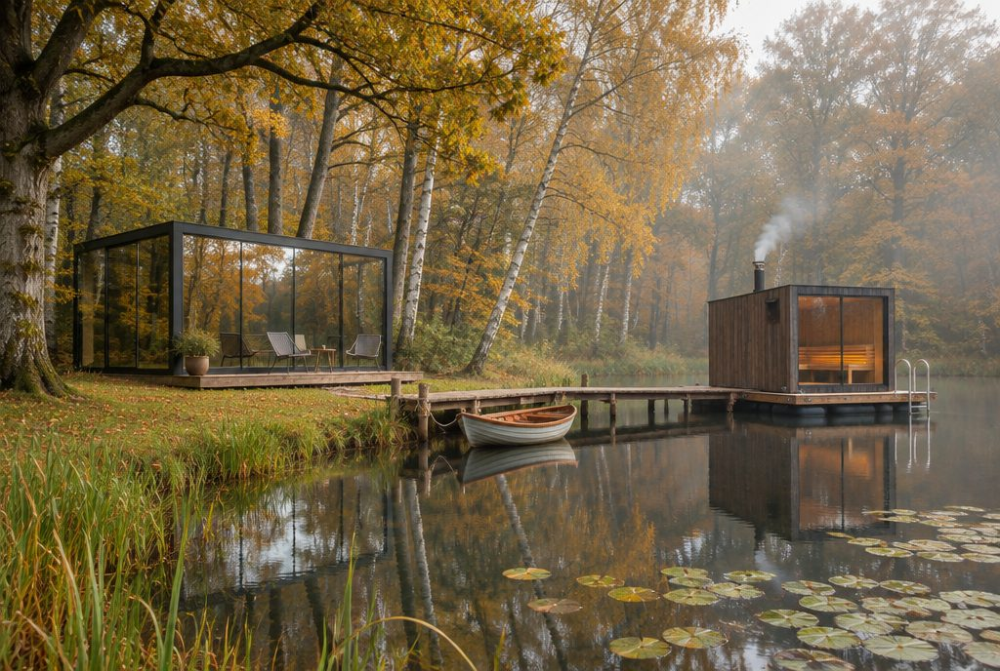
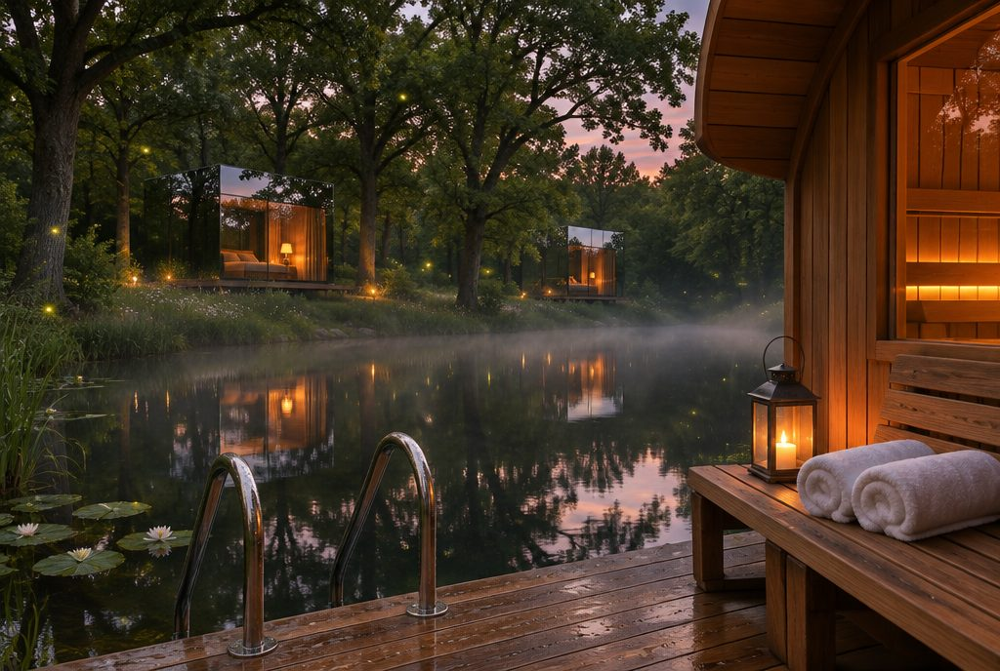
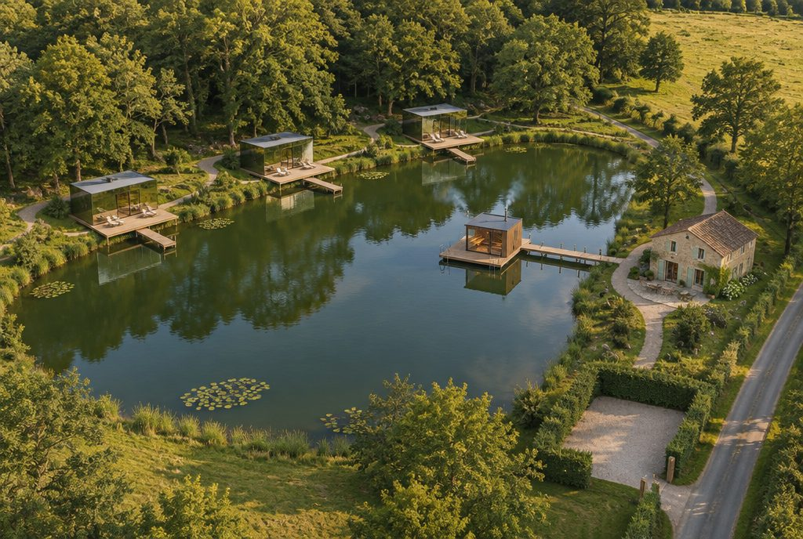
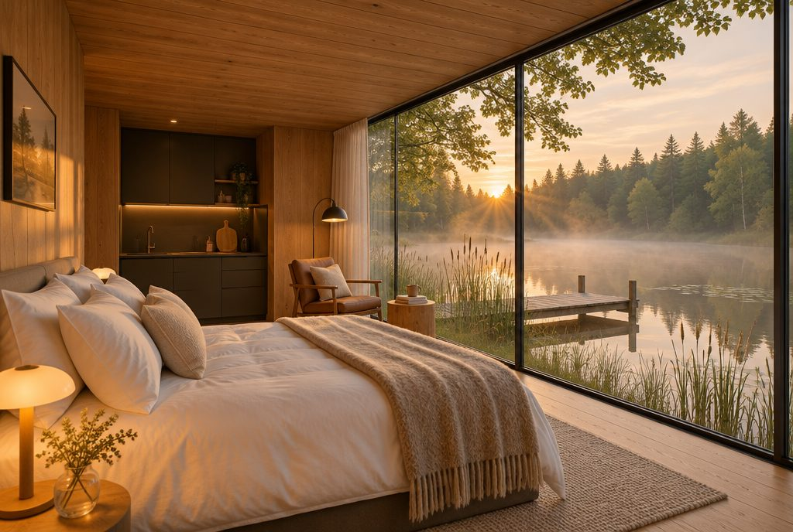

Visuel d'ambiance généré par IA. Ce n'est pas une photo de produit ni d'un lieu réel.
Catalogue de projet · 27 novembre 2026
Une maison vitrée avec sauna en montagne, face à un lac ou à une grande vue. La même au bord d'un étang, avec un sauna flottant. Pour chacune : ce qu'elle coûte, où on a le droit de la poser, et les terrains en vente aujourd'hui.
L'essentiel
En montagne, il faut un terrain à bâtir dans un village, pas un bord de lac. La loi interdit de construire à moins de 300 m des rives des lacs de montagne de moins de 1 000 hectares. Le modèle réaliste est donc une vue dominante sur le lac ou la vallée, avec un sauna à terre.
Au bord d'un étang, presque tous les terrains en vente sont inconstructibles. Seuls conviennent ceux qui ont une partie constructible, un bâtiment existant ou une activité d'accueil déjà autorisée.
Acheter le terrain consomme la moitié du budget. Avec 300 k€, on achète un terrain et on y pose une maison et un sauna. Sans achat, chez une commune ou un partenaire, on en pose deux.
| Le Belvédère · montagne | La Berge · étang | |
|---|---|---|
| Ce qu'on voit | Maison miroir en balcon sur un lac ou une vallée, sauna vitré à côté | Maison miroir sur la rive, sauna flottant au bout d'un ponton |
| Sauna | À terre, avec baie panoramique, bain froid et bain nordique | Flottant, amarré sans moteur, 8 à 10 places. L'étang sert de bain froid |
| Budget avec achat du terrain | ≈ 300 à 317 k€ pour 1 maison | ≈ 294 à 325 k€ pour 1 maison |
| Budget sans achat | ≈ 261 à 281 k€ pour 2 maisons | ≈ 269 à 303 k€ pour 2 maisons |
| Saison forte | Hiver et été | Printemps à automne ; l'hiver grâce au sauna |
| Verrou principal | Trouver un terrain à bâtir avec vue ; permis de construire | Trouver un étang où construire est permis ; statut du sauna flottant |
Dans les tableaux de budget : vérifié ou annonce = relu à la source. relevé = prix trouvé en ligne, pas encore recoupé. estimation = ordre de grandeur à remplacer par un devis. Montants hors taxes pour les équipements.
Modèle 1
Une à deux maisons vitrées posées en gradin sur une prairie en pente, à la sortie d'un village. Chaque lit regarde le lac ou la vallée. Un sauna à baie panoramique, un bain froid et un bain nordique servent de point de rencontre.

En hiver. Visuel IA.

Depuis les bancs du sauna. Visuel IA.

Implantation en gradin. Visuel IA.
Exemple chiffré sur le terrain de Cornimont (Vosges).
| Poste | Source | Budget |
|---|---|---|
| Terrain à bâtir de 5 600 m² avec vue | annonce | 140 k€ |
| Frais de notaire | estimation | 11 k€ |
| 1 ÖÖD Signature, 21 m² | vérifié | 84,9 k€ |
| Transport, grue, fondations, raccordements, terrasse, climatisation | estimation | 25 à 35 k€ |
| Sauna panoramique, bain froid, bain nordique, douche | relevé | 31 k€ |
| Architecte, permis, taxe d'aménagement | estimation | 8 à 15 k€ |
| Total | ≈ 300 à 317 k€ |
Le terrain est assez grand pour ajouter deux ou trois maisons plus tard. Le budget dépasse légèrement 300 k€ : il faut négocier le terrain ou choisir un module moins cher.
Dans un camping municipal repris en gérance, ou chez un hôtel ou un domaine de montagne.
| Poste | Source | Budget |
|---|---|---|
| 2 ÖÖD Signature (2 × 84 900 €) | vérifié | 169,8 k€ |
| Transport, grue, fondations, raccordements, terrasses | estimation | 50 à 70 k€ |
| Sauna panoramique, bain froid, bain nordique, douche | relevé | 31 k€ |
| Chemins, éclairage | estimation | 10 k€ |
| Total | ≈ 261 à 281 k€ |
S'ajoute une redevance ou un loyer annuel, à négocier. Dans un camping créé par permis d'aménager, une maison de 35 m² au plus se pose sans autorisation.
en ligne = annonce relue le 27 novembre 2026. non contrôlé = trouvée par moteur de recherche, page non ouverte.
| Lieu | Surface | Prix | Ce que dit l'annonce | État |
|---|---|---|---|---|
| Cornimont (Vosges), près de La Bresse | 5 600 m² | 140 000 € | Terrain à bâtir en prairie, vue panoramique sur la montagne et les forêts, exposé sud-ouest. Certificat d'urbanisme opérationnel reçu avec avis favorable. Référence Capifrance 979675 | en ligne |
| Aiguebelette-le-Lac (Savoie) | 3 531 m² | 170 000 € | Coteau ensoleillé avec forêt, viabilisé. Seul un lot de 1 121 m² est constructible, dans un lotissement. Vue dominante sur le village | en ligne |
| Saint-Alban-de-Montbel (Savoie), au bout du lac d'Aiguebelette | 793 m² | 109 000 € | Plat, réseaux en bordure. Trop petit pour plus d'une maison | en ligne |
| Saint-Amé (Vosges) | 2 190 m² | 115 000 € | Terrain à bâtir au cœur du village, exposé sud. Vue non précisée | en ligne |
| Vagney (Vosges), à 20 min de Gérardmer | 2 462 m² | 160 000 € | Plat, en zone constructible, réseaux à amener | en ligne |
| Xonrupt-Longemer (Vosges) | 1 200 m² | 159 000 € | Vendu avec un permis de construire purgé de recours, pour une maison déjà dessinée | en ligne |
| Charancieu (Isère), près du lac de Paladru | 2 738 m² | 115 000 € | Avec vue, eau sur place, assainissement individuel | en ligne |
| Savines-le-Lac (Hautes-Alpes), Serre-Ponçon | 427 m² | 120 000 € | Petit terrain. Les lots face au lac sont entre 212 000 et 280 000 € | en ligne |
| Luttenbach-près-Munster (Haut-Rhin) | 1 147 m² | 108 000 € | « Vue imprenable sur les montagnes », plateforme déjà faite | non contrôlé |
| Cadéac (Hautes-Pyrénées), vallée d'Aure | 2 000 m² | 119 000 € | Vue panoramique | non contrôlé |
Annonces en ligne lues sur lesiteimmo.com, pages de Gérardmer, d'Aiguebelette-le-Lac, des Villages du Lac de Paladru et de Savines-le-Lac.
Notre choix en montagne : Cornimont. C'est le seul terrain qui réunit la taille, la vue et un accord écrit de la mairie. Les Hautes-Vosges reçoivent une clientèle d'Alsace, de Lorraine, du Luxembourg, de Suisse et d'Allemagne, en hiver comme en été. Il n'a pas de lac : la vue lac, dans les Vosges, coûte plus de 220 k€.
À vérifier avant toute offre : que le certificat d'urbanisme couvre un hébergement touristique et pas seulement une maison d'habitation.
Modèle 2
Une à deux maisons vitrées sur la rive d'un étang privé, chacune avec son ponton. Au milieu, un sauna flottant relié par une passerelle : on en sort par l'échelle, directement dans l'eau.

Le modèle au petit matin. Visuel IA.

Depuis le sauna. Visuel IA.

Implantation autour de l'eau. Visuel IA.
Exemple chiffré sur l'étang de Valdoie (Territoire de Belfort).
| Poste | Source | Budget |
|---|---|---|
| Étang de 1,5 hectare, maisonnette, garage, 2,5 hectares en tout | annonce | 127,2 k€ |
| Frais de notaire | estimation | 10 k€ |
| 1 ÖÖD Signature, 21 m² | vérifié | 84,9 k€ |
| Transport, grue, fondations, raccordements, terrasse, climatisation | estimation | 25 à 35 k€ |
| Sauna flottant 8–10 places | relevé | 19 à 21 k€ |
| Transport, mise à l'eau, ancrage, ponton, dossier | estimation | 20 à 32 k€ |
| Architecte, permis, taxe d'aménagement | estimation | 8 à 15 k€ |
| Total | ≈ 294 à 325 k€ |
Hors rénovation de la maisonnette, que l'annonce dit à reprendre. Elle peut servir d'accueil.
Dans un camping au bord d'un lac repris en gérance, ou chez un domaine qui a un étang.
| Poste | Source | Budget |
|---|---|---|
| 2 ÖÖD Signature (2 × 84 900 €) | vérifié | 169,8 k€ |
| Transport, grue, fondations, raccordements, terrasses | estimation | 50 à 70 k€ |
| Sauna flottant installé, avec ponton | estimation | 39 à 53 k€ |
| Chemins, éclairage | estimation | 10 k€ |
| Total | ≈ 269 à 303 k€ |
S'ajoute une redevance ou un loyer annuel. Sur un lac public, l'autorisation d'occuper l'eau est précaire : elle convient au sauna, pas à un investissement lourd.

Le réveil visé. Visuel IA.
| Lieu | Surface | Prix | Ce que dit l'annonce | État |
|---|---|---|---|---|
| Valdoie (Territoire de Belfort), aux portes de Belfort | 2,5 ha, dont 1,5 ha d'étang | 127 200 € | Étang, carpière de 25 ares, maisonnette avec une chambre et garage, à rénover. Parcelle de 865 m² au « potentiel constructible, sous réserve des prescriptions administratives » | en ligne |
| Angeot (Territoire de Belfort), à 35 min de Mulhouse | 1 008 m² | 78 000 € | Terrain constructible avec vue dégagée sur un étang. L'étang n'est pas vendu avec | en ligne |
| Selles-sur-Cher (Loir-et-Cher), à 2 h de Paris | 2,6 ha, dont 6 000 m² d'étang | 249 900 € | Maison de 135 m², étang, bois, terrain clos, forage. Le prix prend tout le budget | en ligne |
| Saint-James (Manche), près du Mont-Saint-Michel | 2 ha, deux étangs | 399 000 € | Chalet de 67 m² loué jusqu'à 1 500 € la semaine à des pêcheurs britanniques. Activité vendue avec. Hors budget | en ligne |
| Le Frasnois (Jura), camping municipal du lac de Narlay | n. c. | Redevance n. c. | Autorisation d'exploiter le camping. Dossier à remettre avant le 15 décembre 2026 à 12 h | non contrôlé |
| Thénioux (Cher) | 4 322 m² | 33 990 € | Terrain constructible avec étang, en zone urbaine, certificat d'urbanisme en cours | non contrôlé |
| Romorantin (Loir-et-Cher) | 1,08 ha d'étang | 71 500 € | Étang « en partie constructible » | non contrôlé |
| Altenach (Haut-Rhin) | 4 269 m² | 88 000 € | Étang avec chalet. Zone protégée probable | non contrôlé |
| Oise, à 75 km de Paris | 5 ha | n. c. | Terrain « pour projet d'hébergement insolite », relayé par l'agence de tourisme de l'Oise | non contrôlé |
Annonces en ligne lues sur lesiteimmo.com (Valdoie, Angeot) et ma-propriete.fr (Selles-sur-Cher, Saint-James).
| Annonce | Prix | Pourquoi ce n'est pas faisable |
|---|---|---|
| Lac privé à Taninges (Haute-Savoie), 1,1 ha avec île et chalet de 13 m² | 78 000 € | maisons exclues L'annonce l'écrit : aucune construction nouvelle ni agrandissement. Seule une « petite activité commerciale légère » est envisageable avec la mairie, ce qui pourrait concerner un sauna flottant seul |
| Domaine de 9,6 ha avec trois plans d'eau à La Ferté-sous-Jouarre (Seine-et-Marne) | 118 500 € | très contraint Ancienne carrière classée, à une heure de Paris |
| Étangs avec chalet de 15 à 20 m² dans le Perche, la Sarthe, près de Rennes | 43 000 à 89 000 € | terrains de loisirs Vendus comme terrains de loisirs : rien n'indique qu'on puisse y construire |
| Étang de 6 000 m² en Haute-Vienne | 35 000 € | zone protégée « Zone classée et protégée » selon l'annonce |
Notre choix au bord de l'eau : Valdoie, sous condition. C'est le seul bien en ligne qui réunit un vrai étang, un bâtiment existant et une parcelle annoncée comme potentiellement constructible, pour moins de 130 k€. Belfort est à la porte, Mulhouse et Bâle à environ une heure de route.
Tout repose sur les 865 m² constructibles : sans confirmation écrite de la mairie, le terrain ne vaut rien pour ce projet.
Sans acheter
Reprendre un camping communal évite l'achat du terrain et règle l'urbanisme : les maisons s'y posent sans permis si le camping a été créé par permis d'aménager. Ces deux consultations viennent d'extraits de moteur de recherche ; les dates sont à contrôler sur l'avis officiel.
| Date limite | Lieu | Objet | Ce qui manque |
|---|---|---|---|
| 15 décembre 2026, 12 h | Le Frasnois (Jura), lac de Narlay | Exploitation du camping municipal « Sur Narlay » | Durée et redevance |
| 18 janvier 2027 | Verchaix (Haute-Savoie), vallée du Giffre | Exploitation et modernisation du camping municipal « Lac et Montagnes » | Type de contrat et durée |
Revenus
Prévisions en 3ᵉ année, avec l'hypothèse médiane de l'étude : 230 € la nuit et 52 % d'occupation sur l'année. Ce ne sont pas des résultats observés.
| Recettes par an | Excédent, hypothèse médiane | Excédent, hypothèse prudente | |
|---|---|---|---|
| 1 maison (montage avec achat du terrain) | 48 k€ | +12 k€ | −2 k€ |
| 2 maisons (montage sans achat) | 97 k€ | +39 k€ | +9 k€ |
| Sauna flottant ouvert aux clients extérieurs | 17 à 27 k€ | n. c. | n. c. |
La suite